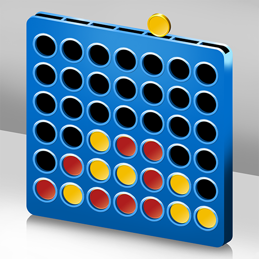

Lab 4 - Pseudocoding and Problem-solving
Challenge
Pseudocode a simple computer game.
Problems

Results
/**
* Four-in-a-Row
*
* An implementation of the game.
* @author Marisa Wong
* April 2025
*
* Set up two players to “red” and “yellow”
* Decide which player goes first.
*
* Show the current grid to players after every move.
* Promt current player to choose a column (0 to 6).
*
* If the chosen column is full:
* Print "Column full, choose another.”
*
*
* Place the player's token in the lowest available row in that column.
*
* Check for a Win.
* If the board is full
* print "Tie"
*
* Else if 4 matching tokens = true:
* Horizontally
* Vertically
* Diagonally (both directions)
* Print "Winner is CurrentPlayer!"
*
* Else
* continue to next step
*
* End the Game
* If there’s a winner, display the winner and end the game.
* If it’s a tie, display a tie message and end the game.
* Offer option to restart or exit.
*/